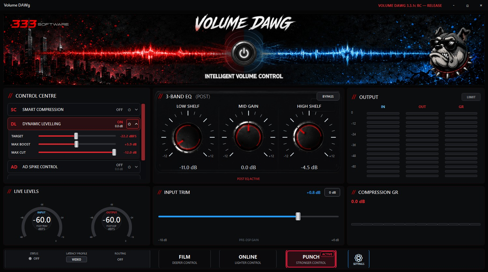

Uneven sources
Reduce the jump between consistently quiet and loud material.
Standard / Windows audio software
Intelligent Volume Control for Windows.
More consistent, controlled listening without constantly reaching for the volume control. Built for normal video, music and online playback.
Feature development is paused for final human sign-off, compatibility checks and packaged-release-candidate validation. No public release date has been announced.

Why it exists
Programmes, videos and tracks can vary noticeably in loudness. Dialogue can be hard to follow, sudden sections can feel disproportionately loud, and wide dynamics can be frustrating during quieter or late-night listening.
Volume DAWg Standard combines level control, independent processing tools and simple tonal adjustment while leaving you in charge of each setting. Results still depend on the source and your chosen controls.
Reduce the jump between consistently quiet and loud material.
Reduce the impact of sudden loud or spike-like sections without claiming perfect normalisation.
Use independent processing intended to improve dialogue intelligibility.
Keep useful listening controls together instead of repeatedly chasing the volume.
Verified capabilities
The frozen Standard release candidate brings its main processing, tuning, routing and monitoring tools into one Windows desktop interface. Film, Online and Punch change Smart Compression behaviour; Dynamic Levelling, Ad Spike Control and Dialogue Enhancement remain independently controllable.
01 / Control
02 / Smart Compression presets
03 / Tuning
04 / Routing
05 / Monitoring
Platform & processing
Volume DAWg Standard is a Windows desktop application built with WPF on .NET 8. Its primary audio processing and real-time visual feedback run locally on the Windows PC.
Easy application routing is configured through Settings for the selected Windows application or source, with guided setup when routing requires attention.
Optional diagnostic audio capture is off by default and requires explicit opt-in for diagnostics or support. Primary audio processing remains local on the Windows PC.
Release candidate
Volume DAWg Standard is a frozen release candidate backed by a clean Release build with 0 warnings and 0 errors, plus 616 / 616 passing automated tests. Final human sign-off, compatibility checks and packaged-RC validation remain underway.